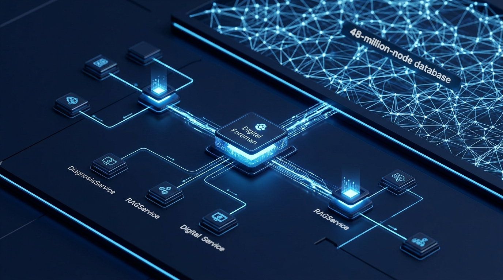
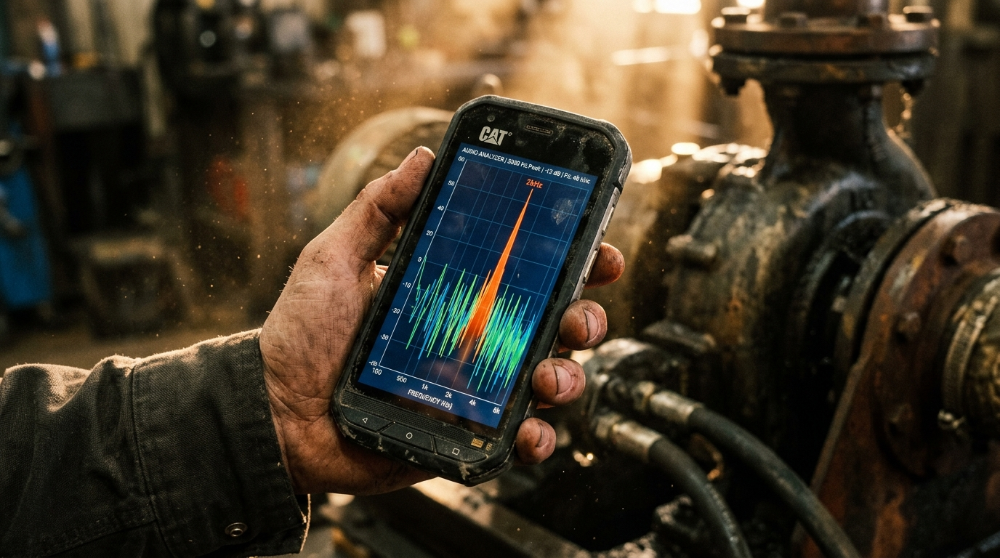
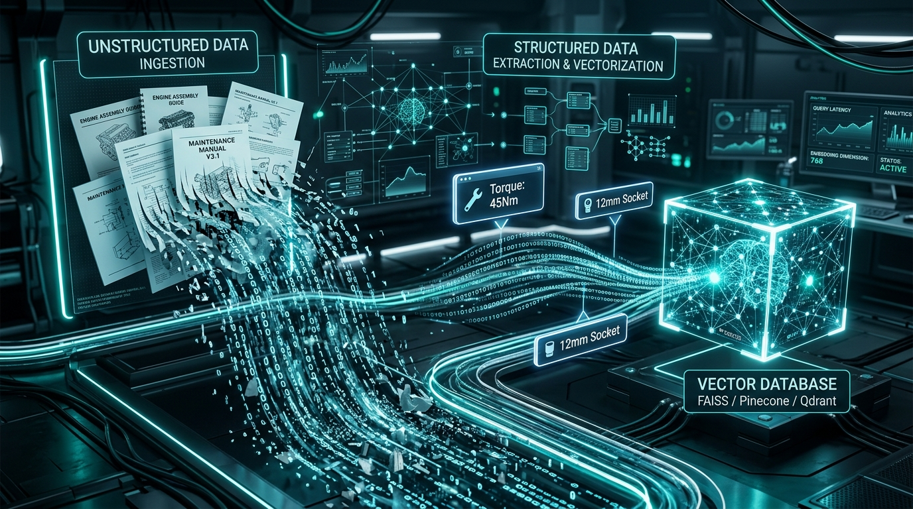
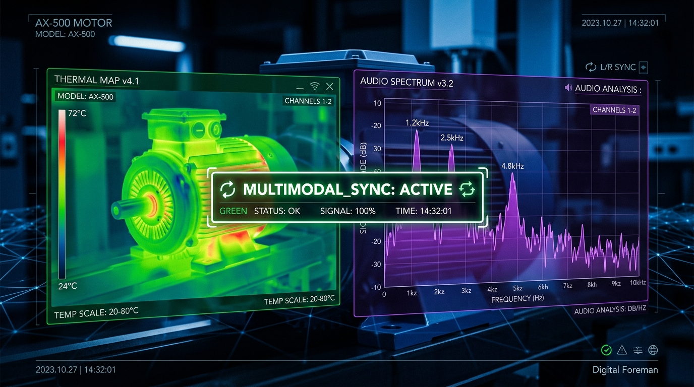
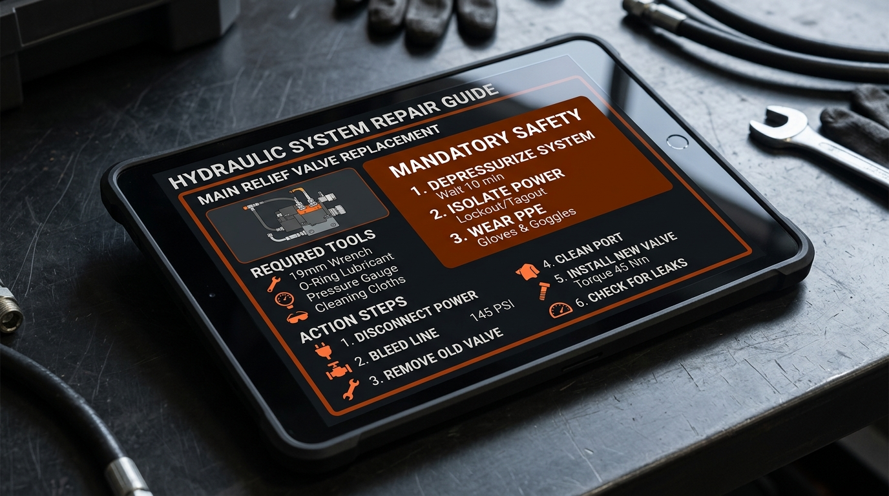

The deployment of a unified multimodal pipeline is a strategic imperative for high-stakes mechanical diagnostics, directly reducing diagnostic latency by correlating disparate sensor data streams with 99.9% precision. By synchronizing acoustic signatures with visual wear patterns, we bridge the gap between "symptom detection" and "root-cause resolution."
At the core of this system is the "Digital Foreman" orchestration model, where the ListenFixService serves as the primary controller.


Mechanical diagnostic success is predicated on high-fidelity media capture; the loss of a single 2kHz frequency spike can be the difference between identifying a bearing failure and missing it entirely.
For volatile processing, APIs capture raw Blob data and convert it to BASE64_ENCODED_STRING. For persistent diagnostic context, the backend enters a polling loop checking the Gemini metadata endpoint until state reaches ACTIVE.
Static knowledge bases are insufficient. Our JIT pipeline provides a competitive edge by performing background discovery of technical documentation the moment equipment is identified via DocumentCrawlerService.

The core value lies in "Multimodal Fusion"—correlating high-frequency audio spikes with visual micro-fractures. The engine establishes MULTIMODAL_SYNC: ESTABLISHING VISUAL HANDSHAKE before inference.
{
"confidence": 0.89,
"primaryDiagnosis": "Secondary drive motor bearing failure",
"symptoms": ["2kHz frequency spike", "Visual vibration in housing"],
"possibleCauses": ["Lubrication failure", "Axial misalignment"],
"severity": "medium-high",
"recommendedActions": [
{
"priority": 1,
"action": "Perform Lockout/Tagout (LOTO) on main pressure relief valve.",
"difficulty": "moderate"
}
],
"requiresExpertReview": false
}


Repair instructions must be tailored to user skill levels to ensure safety. The system synthesizes sequential steps with difficulty markers.
In hydraulic systems, the engine enforces Lockout/Tagout (LOTO) requirements, warning that "high residual pressure poses an immediate kinetic hazard."
Parts Locating leverages user location (ZIP/City) to query live retail nodes in parallel (AutoZone, RockAuto, Home Depot, RepairClinic). Deliveries map via NDJSON stream.
The "Technical Editorial" design philosophy is a non-negotiable standard to ensure user trust. The UI must feel like a "Digital Foreman"—authoritative, calm, and high-end.